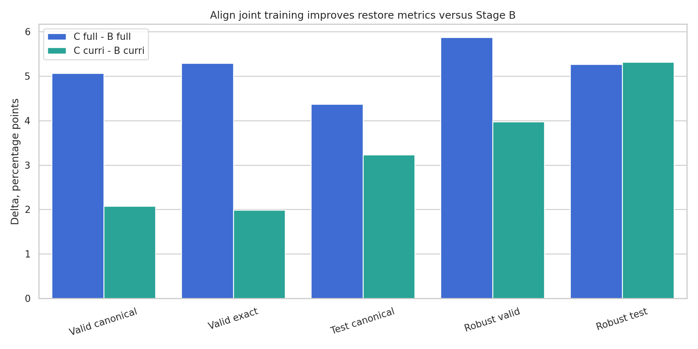
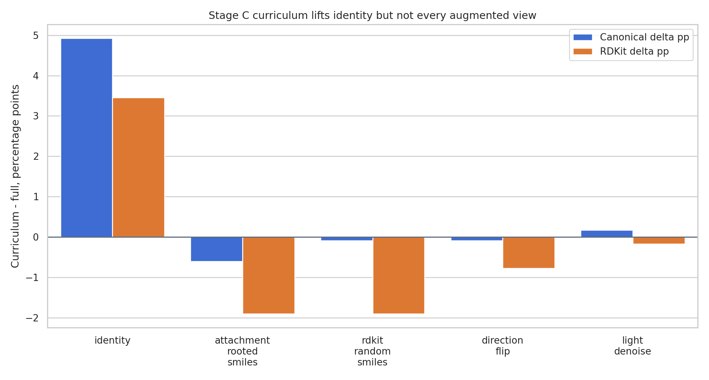

Technical Summary
- Align 共同训练总体值得保留。Stage C full 相比 Stage B full，在 final valid canonical 上提升 +5.06 pp，test canonical 提升 +4.37 pp，robust test canonical 提升 +5.27 pp；Stage C curri 相比 Stage B curri 也分别提升 +2.07 pp、+3.23 pp、+5.31 pp。
- 同 epoch 20 下仍有提升。Stage C full 对 Stage B full 的 valid canonical 提升 +1.64 pp，Stage C curri 对 Stage B curri 提升 +1.30 pp，说明收益不是单纯来自 Stage C 多跑到 30 epoch。
- Stage C curriculum 的边际收益小于 Stage B。Stage B curri 相比 full 的 valid canonical 是 +3.85 pp，Stage C curri 相比 full 只有 +0.86 pp；align 共同训练已经把 full baseline 抬高，压缩了 curriculum 的额外空间。
- Stage C curri 更像提升 final/test 恢复，不是全面提升结构合法性。它比 Stage C full 的 valid/test canonical 更高，但 valid RDKit 为 -0.26 pp，robust valid canonical 为 -0.13 pp，说明部分增强视图和合法性指标没有同步提高。
Align 共同训练提升了 restore 指标，尤其体现在 robust 和非 identity 视图
Stage C 在 full 和 curriculum 两条策略线上都优于对应的 Stage B。这个结论同时成立于 final checkpoint 与共同 epoch 20 的 checkpoint，因此可以把收益主要归因于 Stage C 的 restore + graph/align 共同训练，而不是训练轮数差异。

| Comparison | Valid canonical | Valid exact | Test canonical | Robust valid | Robust test | Valid loss |
|---|---|---|---|---|---|---|
| Stage C full - Stage B full | +5.06 pp | +5.28 pp | +4.37 pp | +5.87 pp | +5.27 pp | -0.0256 |
| Stage C curri - Stage B curri | +2.07 pp | +1.99 pp | +3.23 pp | +3.97 pp | +5.31 pp | -0.0119 |
| Stage B curri - Stage B full | +3.85 pp | +3.87 pp | +2.49 pp | +1.77 pp | +0.58 pp | -0.0284 |
| Stage C curri - Stage C full | +0.86 pp | +0.57 pp | +1.35 pp | -0.13 pp | +0.63 pp | -0.0147 |
口径：Stage B test 使用 identity test metrics；Stage C test 使用 all-view test metrics。Stage C 的 loss 使用 restore_loss 与 Stage B loss 对齐。
Stage C curriculum 提升 final/test canonical，但收益集中在 identity
Stage C curri 相比 Stage C full 的总体 valid canonical 提升 +0.86 pp，test canonical 提升 +1.35 pp，但 final valid 的逐策略分解显示，主要增益来自 identity；attachment-rooted、random、direction 的 canonical 基本持平或略降。

| Strategy | Canonical Δ | Exact Δ | RDKit Δ | 2-attach Δ |
|---|---|---|---|---|
| identity | +4.92 pp | +4.66 pp | +3.45 pp | +3.37 pp |
| attachment_rooted_smiles | -0.60 pp | -1.21 pp | -1.90 pp | -1.73 pp |
| rdkit_random_smiles | -0.09 pp | -0.17 pp | -1.90 pp | -1.99 pp |
| direction_flip | -0.09 pp | -0.52 pp | -0.78 pp | -1.04 pp |
| light_denoise | +0.17 pp | +0.09 pp | -0.17 pp | -0.17 pp |
非 identity 视图显示 align 更像是在提升 SMILES 视图理解
Stage C full 对 Stage B full 的 final valid 分项提升集中在增强视图：rdkit_random +5.79 pp、direction_flip +6.65 pp、light_denoise +7.34 pp，而 identity 只提升 +1.81 pp。这说明共同训练不是只让模型更会复现规范字符串，而是提高了对不同 SMILES 表达视图的恢复稳定性。
| Strategy | Canonical Δ | Exact Δ | RDKit Δ | 2-attach Δ |
|---|---|---|---|---|
| identity | +1.81 pp | +1.99 pp | -0.95 pp | -0.69 pp |
| attachment_rooted_smiles | +3.71 pp | +3.89 pp | +2.85 pp | +2.76 pp |
| rdkit_random_smiles | +5.79 pp | +6.13 pp | +4.58 pp | +4.40 pp |
| direction_flip | +6.65 pp | +6.91 pp | +3.54 pp | +4.06 pp |
| light_denoise | +7.34 pp | +7.51 pp | +4.06 pp | +4.32 pp |
Retrieval 指标支持“字符串-图结构表征对齐”确实发生了
Stage C 才有 retrieval 指标，因此不能和 Stage B 直接横向比较 retrieval；但 Stage C 的 restore 指标没有被 retrieval/align 任务拖垮，同时 test text-to-graph top1 从 full 的 81.69% 到 curri 的 84.54%，说明字符串和图结构之间的表征对齐具备可观质量。
| Run | Valid text->graph top1 | Valid graph->text top1 | Test text->graph top1 | Test graph->text top1 | Test text->graph top5 | Test graph->text top5 |
|---|---|---|---|---|---|---|
| Stage C full | 81.09% | 82.56% | 81.69% | 80.83% | 99.74% | 99.48% |
| Stage C curri | 82.82% | 83.33% | 84.54% | 82.38% | 99.74% | 99.22% |
同 epoch 20 对照排除了“只因多训练”这一解释
Stage C final 30 epoch 确实比 Stage B 20 epoch多训练，但共同 epoch 20 下 Stage C 仍然高于 Stage B。这是判断 align 共同训练有效性的关键稳健性检查。
| Comparison | Canonical pair | Canonical Δ | Exact Δ | RDKit Δ | Loss Δ |
|---|---|---|---|---|---|
| full: Stage C - Stage B | 50.79% -> 52.44% | +1.64 pp | +1.76 pp | +0.29 pp | -0.0173 |
| curri: Stage C - Stage B | 54.65% -> 55.94% | +1.30 pp | +1.35 pp | -1.14 pp | -0.0165 |
Scope, Definitions, and Caveats
比较对象。Stage B 是 restore-only；Stage C 是 restore + align/retrieval 共同训练。Full 是静态 all-view；curriculum 是按 epoch 改变 strategy 权重但保持每 epoch 46,320 行训练量。
主要指标。Canonical/exact 衡量字符串恢复；RDKit validity 和 two-attachment validity 衡量结构合法性；robust valid/test 衡量增强/扰动视图上的泛化；retrieval 指标只存在于 Stage C，用于判断字符串和图结构表征对齐。
限制。Stage B final 是 20 epoch，Stage C final 是 30 epoch，因此 final-level B/C 对比包含训练轮数差异；本报告用 epoch 20 检查做了补充。Stage B 没有 retrieval 指标，所以 retrieval 只能作为 Stage C 内部证据，不能直接证明 B/C retrieval 差异。
Recommended Next Steps
- 保留 Stage C align 共同训练，因为它对 restore 没有负迁移，并且显著提升 robust 与增强视图表现。
- 如果目标是最高 final/test canonical，优先 Stage C curriculum；如果目标是增强视图均衡和结构合法性，Stage C full 更稳。
- 下一轮建议跑 Stage B 40 epoch 或 Stage C 20 epoch controlled ablation，以进一步隔离训练轮数、align loss 权重和 curriculum 的影响。
- 建议单独扫描 random/direction/rooted 的 failure cases，看 Stage C curri 为什么 final valid 合法性略低于 full。
Headline Metrics Audit Table
| Run | Valid canonical | Valid exact | Test canonical | Robust valid | Robust test | Valid loss |
|---|---|---|---|---|---|---|
| Stage B full | 50.79% | 50.45% | 51.88% | 45.32% | 45.96% | 0.1998 |
| Stage B curri | 54.65% | 54.32% | 54.37% | 47.09% | 46.55% | 0.1713 |
| Stage C full | 55.85% | 55.73% | 56.25% | 51.19% | 51.23% | 0.1741 |
| Stage C curri | 56.72% | 56.30% | 57.60% | 51.06% | 51.86% | 0.1594 |